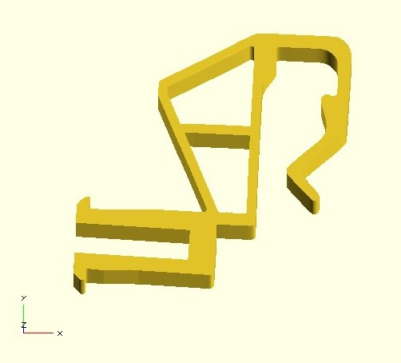
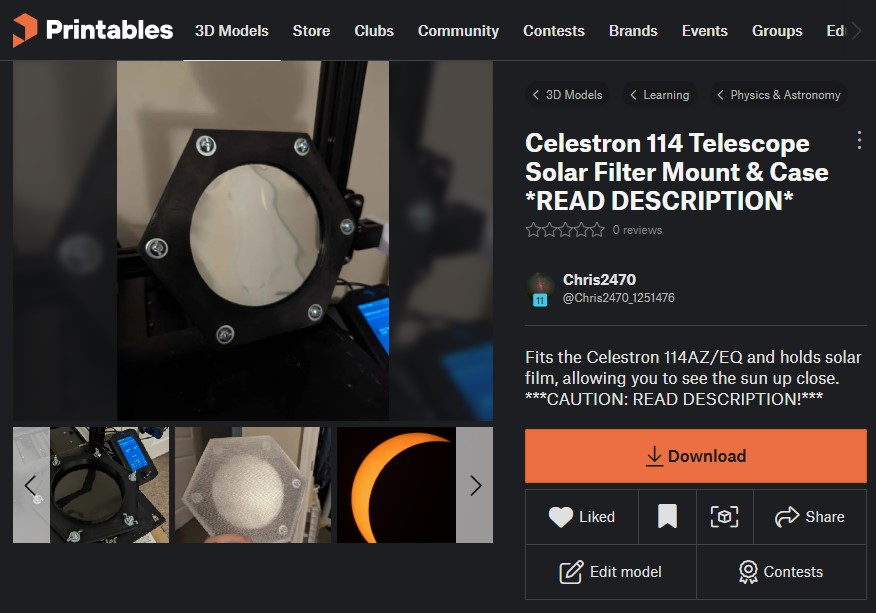
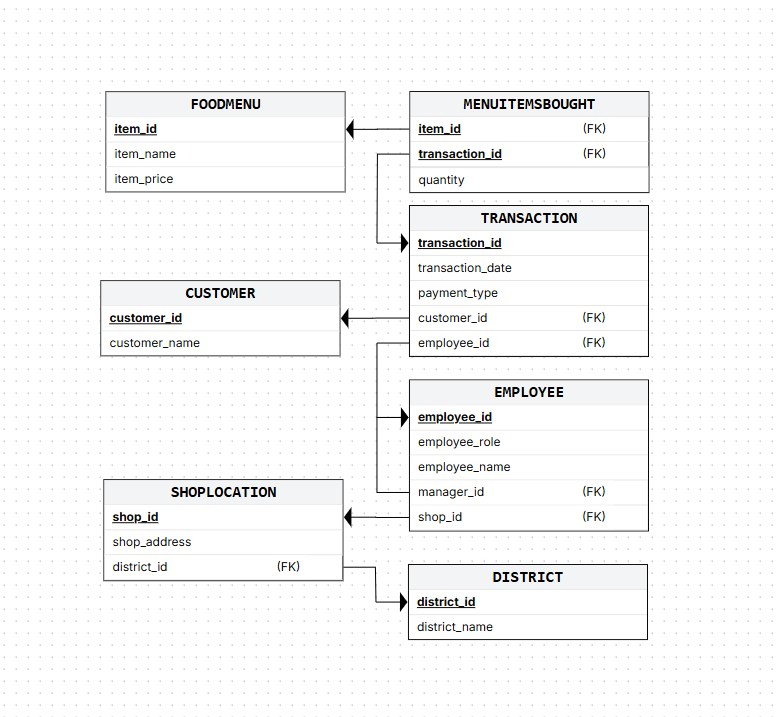
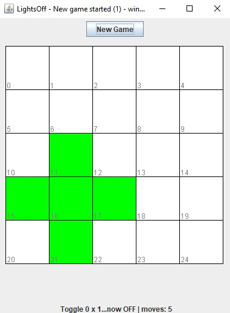
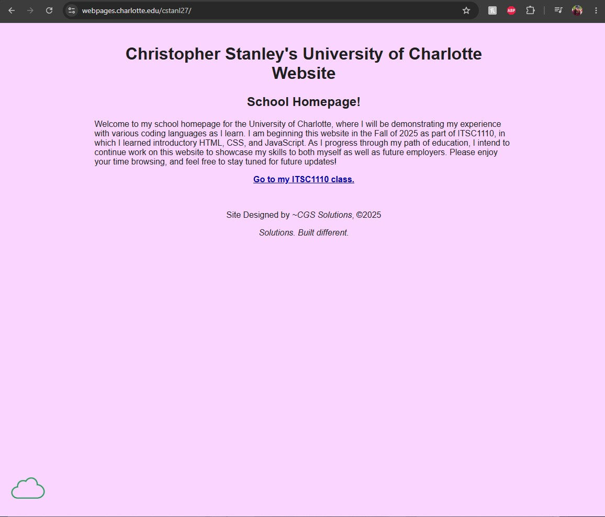

My Projects

Extended Valence Clip Redesgin
This 3D modeling project was created to address a niche challenge. Upon installing new window blinds in my home, I noticed that the existing valence clips did not provide adequate clearance between the blinds and valance. I created this model in OpenSCAD to emulate the design of the original clips but with extended length and thickness to ensure adequate strength when 3D printed.

Solar Filter Design Project
I created this design via FreeCAD in preparation for the 2024 Solar Eclipse. This solar filter was made to fit securely on a common 114mm telescope model, allowing the user to safely observe the eclipse in detail. I have ensured the project is easily assembled and freely available for others to create, use, or modify further to their needs.

Coffee Shop DataBase Project
This database project was created in collaboration with a group of my peers to demonstrate a mastery of database implementation and SQL utilization. This project was designed with scalability and intuitive querying in mind. This experience is broadly applicable to real-world database needs, particularly in business contexts.

Lights Off! Java Game Project
This Java game project was created to demonstrate mastery of boolean logic and game development principles. In this game, a player aims to turn off all illuminated lights. The challenge lies in the fact that toggling one light automatically toggles the four adjacent lights, creating a puzzle that must be completed to win. Player moves and wins are counted, providing a way for players to track their progress.

Personal UNCC Landing Page
This project was created during my studies in ITSC1110 as a personal landing page to showcase my studies. This page served as a learning experience whilst I first learned HTML and CSS. I also gained my first initial experience with public release of a website, utilizing FileZilla for deployment.